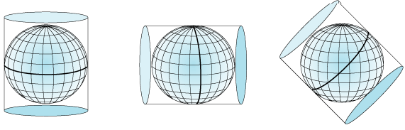

Riproiezione
Dato un layer vettoriale di input definito in un determinato sistema di riferimento spaziale (CRS), il geoprocesso "Riproiezione" consente di generare un nuovo layer vettoriale georeferenziato in un altro sistema.

Questo processo è estremamente utile in caso si voglia standardizzare layer dello stesso progetto definiti in differenti sistemi di coordinate.